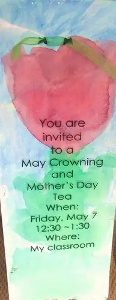
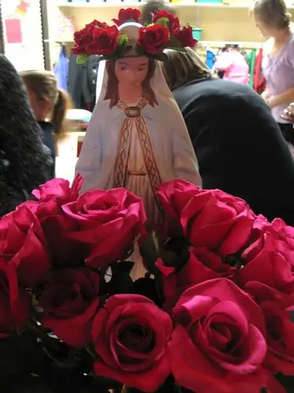
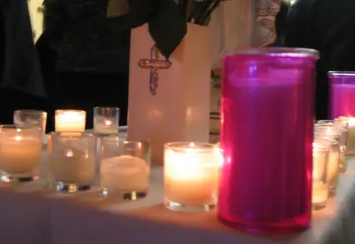
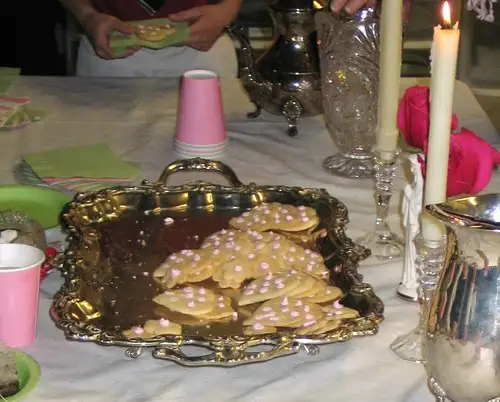
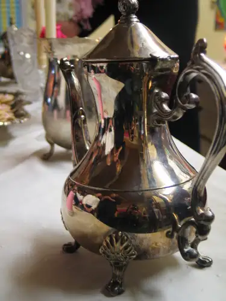
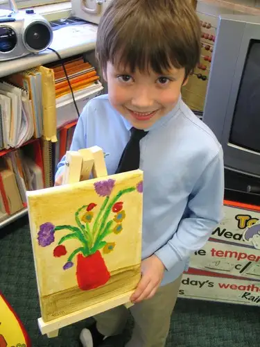
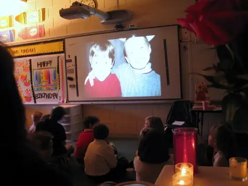
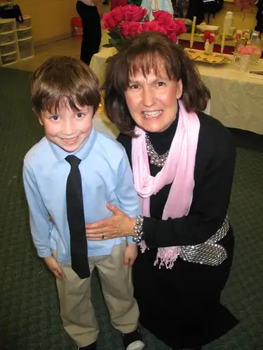

I don’t typically post twice in a 12-hour period, but I had to make an exception this time. In just a few hours from now, I’ll be hosting a radio show on Real Presence Radio themed “All Things Mary,” and one of my three guests will be Mrs. J. Eppler. Because I’ll be interviewing Mrs. Eppler and talking about the lovely May Crowning and Mother’s Day Tea she and her first-grade students host annually at our children’s parochial school, I thought it might be nice to write up a post that includes visuals for the listening audience and others to go to after the show. So, here’s an introduction to a Mother’s Day event that I have been honored to experience four times so far in my life as a mother. I wouldn’t miss it for the world!
First, the invitation arrives:

Then the special day. Each mother walks down the long hall toward her child’s classroom, some of them knowing the treat that will soon unfold, others, experiencing it for the first time. She is greeted by her child, who is dressed in his or her Sunday best and holding out a rose. The rose is for her. She hugs her child. They go into the classroom together, where the other mothers are sitting in the darkened, candle-lit space in a large half-circle, their child at their knees. When everyone is assembled, the ceremony begins.
Children take turns doing their part — the part they’ve been rehearsing now for weeks just for this day. It’s all about honoring their mothers, and honoring the mother of all mothers, Our Blessed Mother, Mary. Without Mary, Jesus would not have come into the world. Without Jesus, we would not have a clear glimpse of who God is, as well as His abundant love and mercy for us. Yes, indeed, Mary is special, and all mothers are special.

The mothers are asked to place the roses in a vase below a statue of Mary. A priest says a blessing, then children continue with prayers and a song that they sing and sign in American Sign Language: “Mary Did You Know…that your baby boy…would one day walk on water…?” The mothers look down and see their sweet children carefully signing the song, a look of seriousness of their young faces. In the dark, they can see the other mothers wiping away tears, passing tissues.
It is a special moment as the mothers collectively realize their young children are just beginning their beautiful lives of possibility. Did Mary know all that Jesus would become and do? Do we know? Can we fathom the great things that are in store for our little ones?

After the song and prayers, after candles are placed by the children at Mary’s feet, after Mary has been crowned with roses, the lights go on and the tea party begins with tea and cookies and excitement from the
children, who have more surprises in store.


Gifts! Gifts for their mothers — hand-written, hand-drawn cards to go with their gift of artwork on canvas.

Just when the mothers think they’re filled up all they can be, Mrs. Eppler announces that she has been taking pictures of the children the whole year, and now, the mothers will be treated to a slideshow with music of all that their children have been doing, and how they’ve grown in their amazing year of first grade. More tears, more tissues, giggles and singing from the kids on the floor as the songs and images that have come to be familiar play.

The lights go back on, photos are snapped, and the students and moms say goodbye for the afternoon. Children skip out the door because they’ve been released early. Mothers’ hearts dance with joy.

Thank you Mrs. Eppler! And thank you to our dear children who responded to her instruction with such grace, tenderness and love!